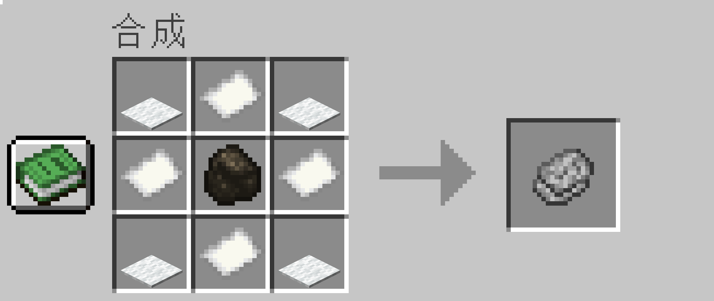
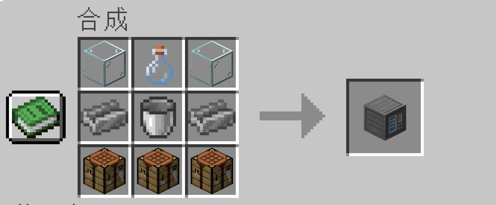
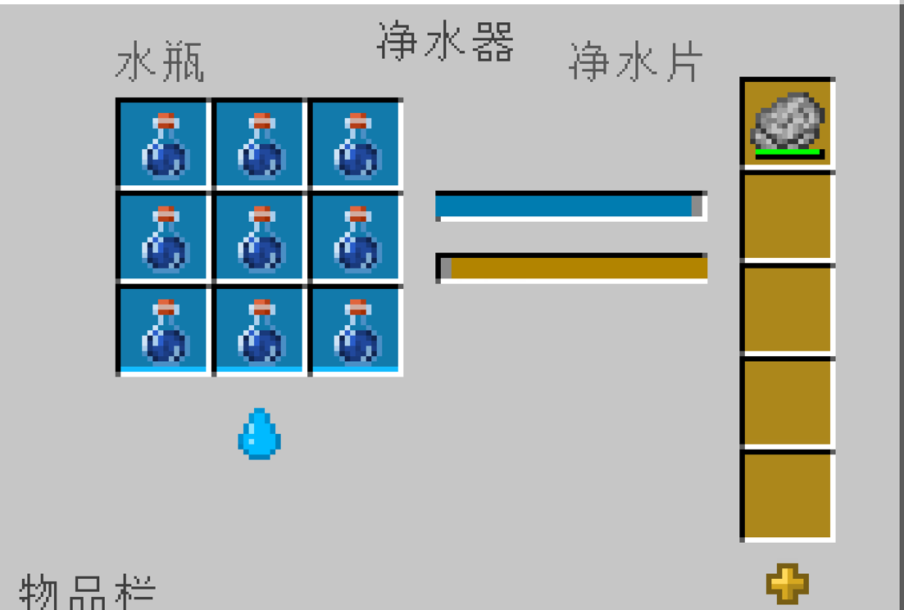

净水片
合成：

净水片可以直接与水瓶合成干净水瓶或搭配净水器使用，关于后者详见下文
净水器
合成:

净水器使用
铝锭与其他材料合成
注意：净水器一旦放置，就无法被挖掘回收（暂时认为是bug）
界面及使用:

使用时净水器净水时，你需要将净水片与水瓶放置在对应槽位，稍等片刻，你就可以得到干净的水了。
净水器会在处理水瓶时逐渐消耗净水片的耐久。一片净水片最多可以过滤 9 次水；每次过滤都会造成轻微损耗，直到其最终破损并无法继续使用。